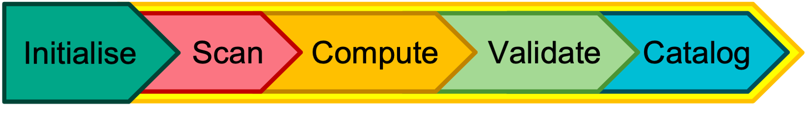

PADOCC Command Line Tool
The command-line tool padocc allows quick deployments of serial and parallel processing jobs for your projects and groups within the padocc workspace. The core phases are most readily executed using the command line tool.
Note
For information on how to setup the padocc environment, please see the Installation section of this documentation. Some general tips would be to:
Ensure you have the padocc package installed and the command line tool is accessible. You can check this by running
which padoccin your terminal.Set the working directory
WORKDIRenvironment variable. All pipeline directories and files will be created under this directory, which includes all the groups you define. It is suggested to have only one working directory where possible, although if a distinction is needed for different groups of datasets, using multiple working directories can be done with user discretion.
Basics of the CLI
General Command Form
The general form of a command for padocc should be to call the command line tool padocc with a minimum of the operation argument specified afterwards. To see all possible operations, use the -h or --help option for padocc:
$ padocc -h
usage: padocc [-h] {add,logs,status,compute,complete,repeat,transfer,update_status,list,summarise,check_attr,set_attr,delete,pfunc,report,new,init,scan,validate} ...
Run PADOCC commands or pipeline phases
positional arguments:
{add,logs,status,compute,complete,repeat,transfer,update_status,list,summarise,check_attr,set_attr,delete,pfunc,report,new,init,scan,validate}
add Add projects to an existing group.
logs Obtain logs from a given project or group.
status Get a general status display for a given group.
compute Compute data aggregations for a project, group or subset of projects. (Pipeline phase 2)
complete Complete projects from a group or the entire group - transfer reports and data files.
repeat Subset projects from a group for reanalysis or repeating a phase of the pipeline.
transfer Transfer projects between groups.
update_status Manually update the status of one or more projects matching conditions.
list List groups in the current working directory. (WORKDIR)
summarise Obtain a data summary for a given group.
check_attr Check the value of an attribute across all group projects.
set_attr Set the value of an attribute across all group projects.
delete Delete projects from a group or the entire group.
pfunc Perform a custom function across a group
report Obtain the validation report for a given project, or a combined report for a group.
new Create a new empty group (to be filled with projects).
init Initialise a new/existing empty group from an input file.
scan Scan a project, group or subset of projects. (Pipeline phase 1)
validate Validate data aggregations for a project, group or subset of projects. (Pipeline phase 3)
options:
-h, --help show this help message and exit
Help pages are also available for each operation, describing all parameters applicable to each operation as well.
$ padocc list -h
usage: padocc list [-h] [-w WORKDIR]
options:
-h, --help show this help message and exit
-w WORKDIR, --workdir WORKDIR
Working directory for pipeline
Note
The working directory (WORKDIR) argument is universal, meaning that it is required for all PADOCC operations. It is not however a required parameter for the CLI argument parser, as the working directory can instead be picked up from the WORKDIR environment variable, as is convenient when performing multiple operations.
Four classifications are applied to the operations, which affect the different arguments accepted by each.
- Universal operations (cross-group), list is the only example.
- Group operations (in-group), all other operations.
- Phased operations (part of the pipeline), scan, compute and validate.
- Input-based operations (input file can be supplied), add, init and validate.
Group operation flags
These are the flags associated with all group-based operations (everything except list).
options:
-h, --help show this help message and exit
-G GROUPID, --groupID GROUPID
Group identifier label
-s SUBSET, --subset SUBSET
Size of subset within group
-r REPEAT_ID, --repeat_id REPEAT_ID
Repeat id (main if first time running, <phase>_<repeat> otherwise)
-p PROJ_CODE, --proj_code PROJ_CODE
Run for a specific project code, within a group or otherwise
Phased operation flags
For scan, compute and validate, multiple flags exist to enable more complex configurations, including parallel deployment.
-f, --forceful Force overwrite of steps if previously done
-v, --verbose Print helpful statements while running
-d, --dryrun Perform dry-run (i.e no new files/dirs created)
-T, --thorough Thorough processing - start from scratch
-b BYPASS, --bypass-errs BYPASS
Bypass switch options: "D" - * Skip driver failures - Pipeline tries different options for NetCDF (default). - Only need to turn this skip off if all drivers fail
(KerchunkDriverFatalError). "F" - Skip scanning (fasttrack) and go straight to compute. Required if running compute before scan is attempted. "L" - Skip adding links in compute
(download links) - this will be required on ingest. "S" - Skip errors when running a subset within a group. Record the error then move onto the next dataset.
-C MODE, --cloud-format MODE
Output format to be used.
-t TIME_ALLOWED, --time-allowed TIME_ALLOWED
Time limit for this job (parallel only)
-M MEMORY, --memory MEMORY
Memory allocation for this job (parallel only) (i.e "2G" for 2GB)
-e VENVPATH, --environ VENVPATH
Path to virtual (e)nvironment (excludes /bin/activate)
-A, --alloc-bins input file (for init phase)
--xarray_kwargs XARRAY_KWARGS
Supply kwargs for xarray, comma separated
--parallel Add for parallel deployment with SLURM
--parallel_project PARALLEL_PROJECT
Add for parallel deployment with SLURM for internal project conversion.
--allow-band-increase
Allow automatic banding increase relative to previous runs.
Note
An optional first step involves creating an empty group in the workspace that can be properly initialised later.
$ padocc new -G my-new-group
There is no particular advantage to creating empty groups but this may be beneficial for organisation of multiple new groups where the data is still being collected, or indeed transferring existing projects to a new group.
All Non-Phased Operations
The following are accepted options to the operation argument, starting with operations that include custom flags, followed by the ones that don’t. Phased operation is detailed in the main user guide section of this documentation.
Add
$ padocc add -G <group> -i new_projects.csv
# Alternative
$ padocc add -G <group> -i new_projects.json --moles
The CLI-based add function takes either a new input CSV file from which to add projects, or a moles-based json file that comes from the CEDA CCI tagger module - CEDA staff use only. Note that the moles flag is specific to the add function, but the -i input file flag is shared by init and validate.
Complete
# Complete whole group
$ padocc complete -G <group> --completion_dir <directory>
# Complete individual project
$ padocc complete -G <group> --completion_dir <directory> -p 0
The final step in the pipeline is to complete each project, transferring a copy of the output products and reports to a directory outside the pipeline. When the -T thorough flag is used, this automatically converts kerchunk files to a remote version, which has https://dap.ceda.ac.uk links added to each kerchunk reference.
Additionally, using the repeat_id flag will enable completing subsets of a group. See the repeat section below. Note that any project selected for completion that is already complete will be skipped.
Get Log
$ padocc logs -G <group> -p 0 --log_phase scan
Show the contents of a log from a given phase, specified using the log_phase flag which is unique to this operation. This can be used to extract a log for a specific project or all the projects in a given group, where the -p flag is omitted.
Repeat
Create a repeat subgroup with ID inside an existing group, based on selection criteria.
$ padocc repeat -G <group> --new_repeat <new_repeat_name> --status ValueError --phase compute
The above will collect all projects in the compute phase where the status matches ValueError. For all projects in a given phase, or across all phases for a given status, use Any as the value as appropriate.
Status
$ padocc status -G <group> --long_display --display_upto 30
Obtain a human-readable status display for a given group, complete with error messages and which project IDs are in which state. The long_display flag shows the entire error message without truncation, and display_upto specifies how many project IDs should be displayed with each error message. For errors with more than this number of projects, no project IDs will be displayed. The default display only shows up to 5 codes for a given error, but the above command will show up to 30.
Finally the separate_errors (S) flag separates successful and failed projects in the validate phase, with percentage values for how many have been successful/unsuccessful. An example output is below:
Group: cmip_1
Total Codes: 49
Pipeline Current:
scan : 5 [10.2%] (Variety: 1)
- Fatal : 5 (IDs = [16, 18, 20, 21, 22])
compute : 4 [8.2 %] (Variety: 1)
- Pending : 4 (IDs = [33, 34, 35, 36])
validate : 40 [81.6%] (Variety: 8)
- Fatal-bypassed : 11 (IDs = [4, 5, 7, 8, 9, 11, 12, 13, 15, 19, 24])
- Success : 11 (IDs = [0, 1, 2, 38, 39, 41, 43, 44, 46, 47, 48])
- Redo : 6 (IDs = [25, 27, 28, 29, 30, 31])
- JobCancelled : 5 (IDs = [6, 10, 14, 17, 23])
- Fatal-data_errors : 3 (IDs = [40, 42, 45])
- Warn-global_branch_time_in_child_not_equal : 2 (IDs = [26, 32])
- Warn-rsds_history_not_equal : 1 (IDs = [37])
- Warn-uas_history_not_equal : 1 (IDs = [3])
Pipeline Complete:
complete : 0 [0.0 %]
Note
New messages representing the aggregation methods are now in place for validation status messages. These may be one of (P>VK), (V>K) or (K) representing which aggregation method; PADOCC, VirtualiZarr or Kerchunk was used, and which should be attempted next in case of Validation failure and manual intervention. In future, this may be able to be utilised by SHEPARD to repeat the computation process for a dataset that has failed validation.
Transfer
Transfer a set of one or more projects from one group to another. Given the example status summary above, the projects corresponding to Fatal-data_errors may be moved into a different group (e.g quarantine) by first creating a repeat_id, or specifying the list of project codes for transfer. Both methods are shown below:
# After using `padocc repeat...`
$ padocc transfer -G <group> -r <fatal_data_errors> --new_group quarantine
# Alternative with project codes
$ padocc transfer -G <group> -p 40,42,45 --new_group quarantine
Note
The list of IDs output from the status function can now be copied directly to the above transfer command list of project codes.
Update Status
This can be used to update the current status message for one or more projects. Mostly useful for debugging, if the code has changed and you wish for certain projects to become eligible for SHEPARD to pick up again, the easiest option is just to reset the status message to an awaiting stage (i.e Redo).
$ padocc update_status -G <group> --old_phase compute --old_status ValueError --new_status Redo
Aggregations
Get a summary of which aggregation method(s) are the ones that have been used for each project to produce the current set of outputs. This will not show where methods have been attempted and failed, but unless certain methods have been bypassed this will be the case anyway.
$ padocc aggregations -G <group>
Check/Set Attributes
Check an attribute across multiple projects in a group using:
$ padocc check_attr -G <group> --attr <attribute>
This will produce a listing of all project codes and the value of the attribute from the detail_cfg, base_cfg, or the main project attribute if it can be located.
$ padocc set_attr -G <group> --attr <attribute> --value <value>
Similarly the set_attr method enables setting a value for all projects in a group (or repeat_id subset), if the attribute is known to exist in the detail/base_cfg files or as a main project attribute.
Delete
$ padocc delete -G <group> -p 0,1,2
Used to remove one or more projects from a specific group, or delete the group entirely if the project flag is omitted.
Note
The user will always be prompted before deletion to confirm when using the command line interface. Interactively there is an argument to be provided to suppress confirmation - usually ask=False
List
$ padocc list
Groups in <WORKDIR>
> group0: 10
> group1: 25
The list function shows all groups in the current working directory and the total number of projects in each group.
New
Create a new group with no current content. This is different to initialising a new group as it does not require an input file. The main use case for creating an empty group is for transferring groups to a new location. Groups are an arbitrary container for multiple projects that mean parallel operations can be managed more easily.
$ padocc new -G <new_group>
Report
Obtain the report for a specific project within a group, or a combined report for the whole group.
For individual reports, include the project code of the given project.
$ padocc report -G <new_group> -p <proj_code>
Or to obtain a combined report for the whole group, simply omit the project code. You may also specify the repeat ID to combine reports from a specific subset of the group.
Summarise
$ padocc summarise -G <group>
Generates a summary of the data analysed in any given project, including the number of datasets compatible with analysis (have passed the scan phase and were not skipped.)
The summary includes the total number of native files as well as an estimate of the total dataset size and the cloud products. A reminder that each project usually produces a single cloud product.
Summary Report: cmip_1
Project Codes Assessed: 23
Source Files: 348 [Avg. 15.13 per project]
Source Data: 447.10 GB [Avg. 19.44 GB per project]
Cloud Data: 3.32 GB [Avg. 144.38 MB per project]
Cloud Formats: ['kerchunk']
Source Formats: ['ncf3', 'hdf5']
File Types: ['json']
Chunks per File: 2538771.00 [Avg. 110381.35 per project]
Total Chunks: 19884293.00 [Avg. 864534.48 per project]
Next Steps
Cloud products that have been validated are moved to a complete directory with the project code as the name, plus the revision identifier abX.X - learn more about this in the Extra section.
These can then be linked to a catalog or ingested into the CEDA archive where appropriate.